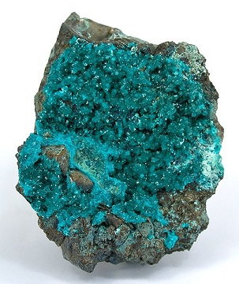

| Product | About |
|---|---|
 Neumontite |
Neumontite is our closest mineral to earth. It takes only about a week to form naturally in its natural habitat. Inexpensive, but looks pretty. |
 Polionium |
See the rainbow, touch the rainbow! Polionium can be used to freeze things quickly if put into a freezer with food. Can you say "reverse microwave?" Not to be confused with "polonium." |
|  Mermaidium |
From neon signs to glow-in-the-dark paint, Mermaidium can shine for up to 5 days after 5 minutes in the oven. And when the glow goes out, it can be rekindled through re-applying the heat. |
| Sincerium |
The newest addition to our lineup, Sincerium can be melted down to make a wood finish that is nigh unbreakable yet lightweight, or used as a component in concrete for foundations and such. More sincere than Linus's pumpkin patch. |
| Thompsonium |
Very explosive when exposed to electric current. Used in fireworks and mining. |
 Narcissinium |
Our clients use Narcissinium to make glassware for the narcissist in you. Inexpensive and less breakable than glass, a vessel made with it can withstand drops of up to 7.7 feet. |
| Space Delvers (TM) Metal Cutting Saw |
If it's not a diamond, chances are it can be cut with our saw. The blade is composed of a well-kept secret formula of the galaxy's best materials. Companies around the world are already using our saws to give their productivity an edge over the competition. |